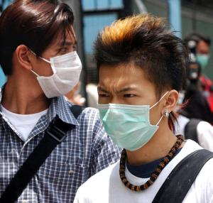
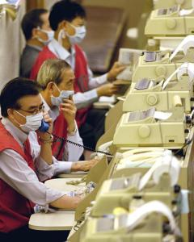
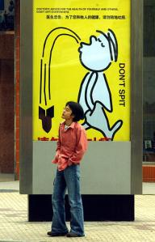
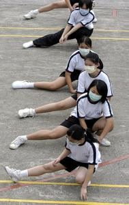
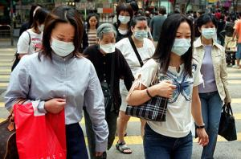
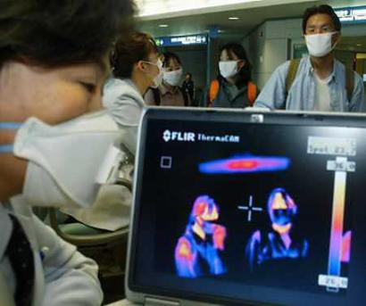
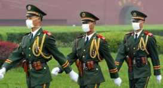
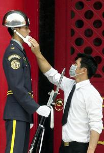
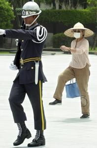

|
SARSIt's an intriguing notion: hiding deep within uncharted rain forests, floating beneath the sea or drifting invisibly through the air, deadly microbes lie in wait - and if they combine correctly in such a way as to enter the human bloodstream, a merciless, devastating new plague upon humanity could be unleashed. In April of 2003, a rapidly mutating virus known as SARS (Severe Acute Respiratory Syndrome) terrified top scientists, grew to the status of a red-alert international epidemic, but failed to generate much revenue at the American box office. The disease was spread by close person-to-person contact. Those who touched objects which had been licked, coughed upon or elsewise contaminated with spattery aerosol droplets were also infected. The most documented transmissions of SARS took place among health-care workers, a group of dedicated medical professionals equally susceptible to colds or the flu. The symptoms could sneak up on a person, moving beyond the typical nighttime sniffling, sneezing, coughing, aching, wheezing and stuffy head - into fevers of over 100 degrees, vibrating body aches and chills, difficulty breathing, dry vomiting, muscle stiffness resembling paralysis, loss of appetite, rashes, blood coughing, diarrhea and death. It was the next AIDS, the next Bubonic Plague, the next Pestilence - and wouldn't you know it, the disease first gained notoriety in the land of the Chinese Yo-Yo. Beijing officials did everything they could to cover up SARS from prying eyes - pretending everything was okay while shuttling hundreds of persons (and their immediate relatives) in unmarked vans to sterile quarantine camps. When truth came to light, it was disclosed that nearly 10,000 were under quarantine, 4,000 people had been infected, and over 150 had died. Close behind was Hong Kong, with 2,000 reported infections and 150 deaths. Canada was placed a distant third, with 343 reported cases. Attempts were made to link SARS to terrorism (a hot topic in the United States for a brief period of time during September of 2001), but the Center for Disease Control seized upon the SARS genome instead. CDC scientists worked closely with experts at academic institutions throughout the United States. "This is an active, working community of scientific experts who have been contributing their knowledge and expertise throughout this investigation," said William Bellini, Ph.D., SARS laboratory team coordinator. Visions of The Andromeda Strain, 12 Monkeys and Stephen King's The Stand danced in people's heads. Nearly identical viral findings in the U.S. and Canada suggested the SARS problem likely originated from a common source - and the race to see which country could quarantine, sequester, and imprison the most people officially begun. The war on drugs, the war against pornography, the war against Iraq - those things were controversial in nature, and hotly debated. But a "war" against a killer disease? Who's going to contest that? South Korean authorities dragged huge thermal imaging machines to airports in the hopes of screening both human beings and luggage for the disease. If you looked sick or cranky, if you appeared to be "warmer" than those standing beside you, you were pulled out of line. Toronto, Canada did the same thing, examining the body temperatures of each and every arriving passenger at international airports with infrared instruments. Officials were forced to direct the closing of hospitals, restaurants, schools, and workplaces. Within a few days, more than a thousand healthcare workers volunteered for home quarantine. The World Health Organization imposed travel warnings upon Toronto - the only country outside China and southeast Asia where SARS had actually killed someone. Twenty-one deaths were reported in Toronto alone. The alert brought a storm of protest from Canada, and hundreds of millions of dollars hemorrhaged away from tourism, travel, and other businesses. The city shut down, but health warnings were removed less than a week later. WHO denied succumbing to political pressure. "The government of Canada and the government of Ontario are going to continue to do the work that is necessary to ensure the safety and security of all of the world's citizens," gasped Ontario Health Minister Tony Clement. President George W Bush's response to SARS was immediate, and equally informed: "We hope it will have a limited effect on the U.S. economy." Disney was one of the first U.S. companies to claim a direct link between SARS and the worsening slump of its theme-park business. Intel (one of the first U.S. firms to get smacked by SARS) laid the groundwork for how many U.S. corporations followed suit: they told employees to cancel business trips, postpone meetings and send workers home. Wal-Mart, the world's largest retailer, ignored warnings against business travel, continuing ahead with plans to open more than 150 new stores in China. Microsoft's policies on how to handle SARS were set in Asia, inspired by hopes that the disease was just a temporary phenomenon. "We're confident of Microsoft's ability to bounce back," said Alannah Goss, a Hong Kong spokeswoman. Citizens of the United States who had long exhibited concerns about terrorism, or confusion about the war with Iraq, or an inability to find suitable employment, or an increasing reluctance to enter into conversations with European people of color settled cheerfully into SARS-related anxiety disguised as not giving a shit. Americans who prided themselves on rugged individualism were soon overheard making bland SARS jokes in web logs or the public discourse at large. On college campuses across America, SARS was the new Anthrax.
Interest in SARS infected America for about twenty-four hours, and then drooped faster than the twin towers. Even the animal world was falling apart. The San Diego Zoo could no longer in good conscience export Hua Mei, a giant panda bear - even though zookeepers weren't specifically aware of any genuine threat to the animal. The zoo had an agreement with China stating that any cubs born from the matings of loaned pandas must be returned to China after their third birthday. Hua Mei was born August 21, 1999 - the offspring of Bai Yun and Shi Shi, who has since returned to China. Shi Shi returned to Beijing, replaced by another wild-born panda, Gao Gao, who has since mated with Bai Yun. Other relatives include Bun Bun, Yum Fun, Lum Tum and Sum Yung Gai. But after coming clean about the SARS epidemic, Chinese authorities cared less about pandas and more about tougher quarantine measures. Two thousand villagers in Beijing torched a school after rumors surfaced that it might be used to quarantine those suspected of having SARS. The building was ransacked and set on fire. The mob then proceeded to the local education office and smashed it to pieces. Then they visited the town hall and broke apart the entire building, breaking windows, removing doors and throwing them in a burning pile. Vehicles were overturned and set on fire. When anti-riot police arrived, the villagers ran. The central People's Bank of China immediately put new cash into circulation, holding used currency for 24 hours in vaults before recycling them back into circulation. Dirty, unwashed bills were showered, sterilized, and subjected to ultraviolet radiation to kill the SARS virus. Customers were urged to use ATM machines so bank tellers wouldn't be infected. Paranoia about the relative "safety" of outdoor ATM machines expanded in scope, and transactions apart from those conducted on the telephone or the Internet screeched to a halt. This led to runs on banks, as financial managers considered hiring people to stand outside the bankruptcy registry coughing loudly to scare people away. Beijing
hospitals ran short of drugs and surgical guards. Disinfectants
and gauze face masks worn by millions of Chinese became scarce and expensive
in Beijing. Imported masks sold for up to $20 in convenience marts. Villagers in southern Taiwan strapped bras to their faces as an alternative. Workers in a brassiere factory began cutting colorful cups apart to produce makeshift masks. Doctors
and nurses were described as weary and demoralized, living in makeshift quarters
and equally isolated from their families. Those employed in the health care
industry were shunned by neighbors. Rumors surfaced in South Africa that carrying
around an Ace of Spades with Saddam Hussein' face on it would somehow keep
the virus at bay. A man in the Philippines stabbed another man to death
after accidentally being sneezed upon. A man in China hanged himself
after mistakenly believing his wife had contracted the disease. Three babies
Elevator buttons, door handles, toilet seats - all the ways people typically pretend they got herpes were how people all over the world were contracting SARS. Chinese officials in Hong Kong hosed down filthy sidewalks outside disgusting eateries. Sticky, rubbery escalator handrails at shopping malls and food courts were sterilized with alcohol and antiseptic. One elderly patient resting in a hospital bed asked the day nurse if his testicles were black. Exhausted and cranky, the nurse yanked forth his sheets and pointed with an outstretched finger, stating loudly that the man's testicles appeared just fine and that SARS was exclusively a respiratory disease. Embarrassed, the patient pulled the heavy cloth mask from his face and informed her that all he wanted to know was if his test results were back. |
 born
to SARS-infected mothers were found to have the disease, and each was placed
in intensive care alongside a panda.
born
to SARS-infected mothers were found to have the disease, and each was placed
in intensive care alongside a panda.